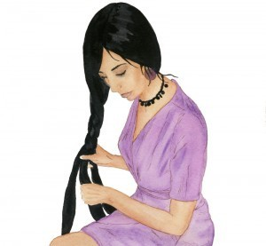

We’re just putting the finishing touches on the first series of posters for Son of the Great River. These glossy posters are based on original watercolors like the one above (Based on the pen-and-ink illustration of Rheem from the book) and are designed for display in bookstores carrying Son of the Great River. If you’re a fan of the book and would like a poster, drop me a line and I’ll get one out to you.